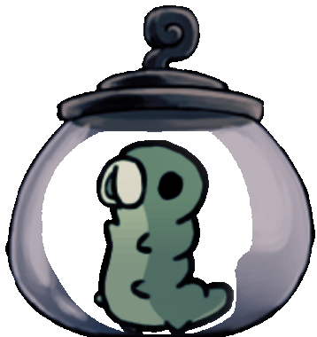

Hey y'all! It is I, the Grub in the Jar himself! I made this silly little website for a school project, so I apologize if it isn't exactly the best. It was originally going to be about every area of the game, but that was taking waaaayyyy too long, with the project being due in 3 days and I having only finished Forgotten Crossroads, so I switched to Pilgrim's Way so I would have less areas to talk about. I hope y'all liked it! Also hover the mouse on me. Just do it.